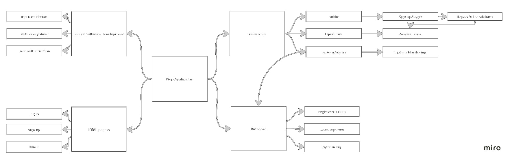
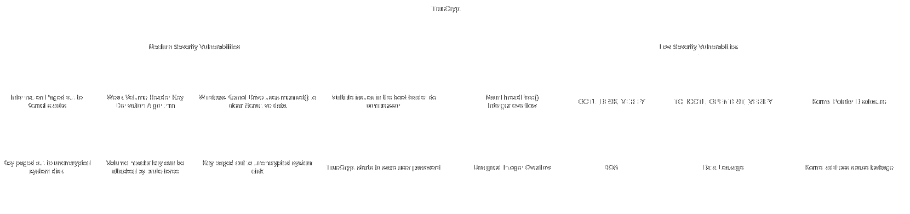

Welcome to my Software Engineering Project Mangment module ePortfolio.
Below you will find reflections, assignments and information gathered from all units.
Unit 1
Learning Outcomes: Introduction to Software Engineering Project Management.
Unit 1 introduces software development strategies such as waterfall and agile approaches. Both methodologies are different in terms of application in which the development workflow is unique. The first week of this module offered an introduction on software project management principles. This includes the necessities to understand the software development life cycle including the management of all parties involved with a project. This unit also introduces a schematic approach for software managers that underlines the planning, business, and IT activities as well as the common causes of project failures. Furthermore, I was excited to meet the team members for the first time this week in order to plan for the module’s upcoming assignments. Reflecting on my past experience with working within a collaborative environment, I have high hopes the valuable learning experience yet to come.
Team Notes: week 1
Following my introduction to the team members, we have agreed to create several SLACK channels to communicate our progress, these channels correspond to the assignment 6 requirements. We have gathered some information from the transcript provided in unit 6 and have divided the tasks among ourselves. Brad will begin working on the project schedule, meanwhile Michle and Harris will look into gherkin statements and project risks. That’s said, I will be creating the project template with the key sections and begin looking at hardware and software requirements. We all agreed that the Agile methodology will be the main development framework for this project. Finally, we decided to schedule a weekly meeting on Mondays to communicate our progression through assignment tasks. Our team contract was concluded and submitted to the tutor.
Discussion 1: Causes Of Project failures
According to (Lehtinen, et al., 2013) the common cause of project failure is derived from the following categories:
Furthermore, I believe that the three most common cause of project failure are the following:
Below are examples of project failures as result of the causes mentioned above:
All references are recorded in unit 12.
Unit 2
Learning Outcomes: Project Managment principles
In my view, the central focus of this unit revolved around estimation techniques, cost classifications, and gauging productivity as a software project manager. While similar principles apply across various project management domains, it was particularly crucial to grasp the metrics used to account for a programmer's contributions in the overall cost. Moreover, the Unit 2 seminar on Estimation and Risk emphasized the importance of estimating programming efforts based on functionality rather than solely relying on Lines of Code (LOC). During this unit, my teammates and I began the process of preparing estimates for the hardware and software components required for Assignment One, utilizing a spreadsheet format keeping in mind strategies learned throughout this unit.
Team Notes: Week 2
In this week’s meeting, Brad and Michael developed a project plan with 6-week cycles and frequent local progress reviews. They considered scrum team compositions based on budget constraints. Michael created Gherkin statements for requirements, emphasizing the challenge of describing hardware specifications. They highlighted the importance of justifying decisions with references and discussed the possibility of creating different versions of the system. The team acknowledged the need to identify specific tasks for project lifecycle and discussed risk mitigations, TOGAF as an enterprise architecture, and the potential for profit by building more than 2000 machines. Moreover, I continued to allocate the appropriate HW and SW requirements using a spreadsheet to calculate the costs of each component.
Unit 3
Learning Outcomes: Cost Estitmation Methods
This unit’s main take points in opinion are the cost estimation techniques and planning strategies. This serves as a vital step for constructing the foundations for the developing a project. I had the opportunity to delve deeper in understanding the different types of cost estimation methods such as COCOMO and Expert Judgment. I would like to discuss the possibility of using these techniques in the future to asset as in building a constructive cost analysis for our system requirements during the assignments.
Team Notes: Week 3
In this meeting, Brad presented a summary of the workers' plan, estimating it at around £185K, while Michael and I outlined their findings on hardware configuration, estimating costs at approximately £370K. Brad then summarized the project schedule, detailing eight 6-week cycles split into design, development, and testing weeks. Haaris suggested the possibility of generating revenue through alpha versions to aid in covering project costs, addressing budget concerns. The team discussed the cost of one machine, agreed on Gherkin statements, project plan template, and methodology sections, and explored the potential for system upgradability and extensibility. They operated under the assumption that EDC doesn't expect all 2000 systems simultaneously. Michael committed to working on other system variations, myself to adding information to the document and working on the introduction, Brad to initiating the limitations section and contributing to the timeline, and Haaris to focusing on the risk plan section.
E-Portfolio Activity:
Drawing from the insights presented in Dicheva & Hodge's (2018) paper on Data Structures, particularly focusing on stacks, it is evident that a multitude of online applications rely on this data structure. Social media platforms, for instance, leverage such data structures for various functions, including the storage of posts and images in the form of arrays and matrices. For instance, when users engage in activities like post editing, involving multiple actions, the system maintains a record of these changes in case the user decides to undo them. In such instances, the user can simply "pop" the latest change from the stack.
All references are recorded in unit 12.
Unit 4
Learning Outcomes: Regular Expressions
In unit 4, I was keen to understand the usage of regular expressions (Regex) and how it is a powerful tool that is used in text processing and identifying patterns. Regex can be particularly useful in providing a secure approach for validating input that can be greatly beneficial to our application implementation phase. On the other hand, I have learned that “evil regex” is referred overly complex regex patterns that can have unintended consequences such as the increase of the process time due to excessive backtracking. We are planning to use regex in our sign-up pages and building a pattern for each input category such as the email and submission ID.
Team Notes: Week 4
Now that we are closer to the deadline, we have decided to setup a session to review each other’s system components and research materials. We also conducted few debates concerning the secure software features and GDPR clauses to be used. Meanwhile, we had to test several modules such as the login and signup features to help us understand and construct our UML diagrams.
Portfolio Component: Regex
What is ReDOS and what part do ‘Evil Regex’ play?
ReDoS stands for "Regular Expression Denial of Service," which refers to a type of cyber-attack that exploits the vulnerability of certain regular expressions to cause a denial of service (DoS) condition in the target application. Regular expressions are patterns used to match and manipulate strings, and they are commonly used in programming.
"Evil Regex" is a term used to describe malicious or intentionally crafted regular expressions that are designed to trigger the ReDoS vulnerability in regex engines. These malicious regular expressions are carefully crafted with certain patterns or combinations of characters that exploit the way the regex engine processes input, causing it to exhibit poor performance and take an excessive amount of time to complete the matching process.
What are the common problems associated with the use of regex? How can these be mitigated?
Performance and Efficiency: Some regex patterns can be inefficient and result in poor performance, especially when dealing with large input data or complex patterns. s, it's important to use optimized and efficient regex patterns. Avoid using overly complex or redundant patterns, and consider techniques such as pattern simplification, character class optimization, and quantifier optimization to optimize regex performance.
Security Risks: Regular expressions can potentially introduce security risks, such as ReDoS attacks, as mentioned in the previous answer. Malicious or poorly crafted regex patterns can be exploited to cause denial of service, information disclosure, or other security vulnerabilities in the target application. To mitigate security risks associated with regex, it's important to validate and sanitize any input that is used in regex patterns, and carefully review and test regex patterns for potential vulnerabilities, such as ReDoS.
How and why could regex be used as part of a security solution?
Input Validation: Regex can be used to validate and sanitize input data to ensure that it meets the expected format or pattern, which can help prevent injection attacks, such as SQL injection, cross-site scripting (XSS), or other types of code injection attacks.
Artefacts: UK postcode, Regex
UK post codes consists of two parts, an “outcode” and an “incode”. Each consists of two – four characters followed by a space, then another three characters. A regex pattern can be extracted from a post code if we comply with a basic rule. An outcode consists of 1-2 letters followed by a character that is aways numeric, followed by and optional letter or number. Example (AA1A / A1A/ AA11 etc). An incode is separated by a single or multiple space, followed by a numeric character, followed by 2 letters. This regex pattern also limits the length of the input to match the UK post code format, thus protecting for ReDos. Check the code below.
import re
def validate_uk_postcode(user_input):
"""A function to validate user post codes inputs using regex match function"""
return bool(re.match(r"^(((([A-Z][A-Z]{0,1})[0-9][A-Z0-9]{0,1}) {0,}[0-9])[A-Z]{2})$", user_input))
test_codes = ["M1 1AA", "M60 1NW", "CR2 6XH", "DN55 1PT", "W1A 1HQ", "EC1A 1BB", "12312asda"]
for user_input in test_codes:
print(validate_uk_postcode(user_input))
Results
True
True
True
True
True
True
False
All references are recorded in unit 12.
Unit 5
Learning Outcomes: Testing
This unit explores the various testing modules offered by python such as pylint, unitest and flack8. I think this unit provides a clear approach on the testing strategies, especially during the codio exercise. I have learned how to import the testing scripts to my main file and incorporate testing models for each of my code block that presents different system features.
Team Notes: Week 5
During this meeting, the following work in progress topics were discussed:
The above points assisted us with identifying the required tools to build our application. That is because our design proposal will cover the processes and frameworks needed to execute the web app.
Portfolio Component: Cyclomatic Complexity
Cyclomatic Complexity in my opinion is still reelevated when it comes to developing a secure software. Cyclomatic Complexity is a quantitative measure of the complexity of a software program's control flow, and it can be used as an indicator of the potential risk and maintainability of the code. Higher CC values can indicate the likelihood od in introducing security vulnerabilities. Although CC is just one of many factors to consider in developing a secure software, it provides an overall matric of the level complexity of the code in which few initiatives can be taken to refactor the code and the value of test cases.
Artefacts: Testing
The unit test module in python is imported to conduct a test case on our previous regex syntax that validates the UK post codes. In the previous code, the built-in test in a from of a “for loop” was added to validate the user input. For the unit test to succeed, the built-in tester will be removed. A class will be created to test the validation function in the post code checker file. Several assert functions will evaluate if the post code is True. See the code below:
import unittest
import Unit4_Regex
class PostCodeTester(unittest.TestCase):
def test_Unit4_Regex(self):
self.assertEqual(Unit4_Regex.validate_uk_postcode("M1 1AA"), True)
self.assertEqual(Unit4_Regex.validate_uk_postcode("M60 1NW"), True)
self.assertEqual(Unit4_Regex.validate_uk_postcode("CR2 6XH"), True)
self.assertEqual(Unit4_Regex.validate_uk_postcode("23123123s"), True)
if __name__ == '__main__':
unittest.main()
Results
Ran 1 test in 0.018s
FAILED (failures=1)
Launching unittests with arguments python -m unittest test_postcodes.PostCodeTester.test_Unit4_Regex in F:\01_Documents\01_My_Academics\03_Essex University\03_04_NISM_SSD\04_Eportfolio\Codes
True != False
Expected :False
Actual :True
All references are recorded in unit 12.
Unit 6
Learthing Outcomes: Testing libraries
This unit was somehow and extension of the testing and debugging topics of the previous unit. I have continued to experiment with python built in testing libraries and linters that improves my code quality and structure. Since this week was the due date of our design document for the cyber security application, we have began testing out log-in and sign-up features of our software using these strategies.
Team Notes: week 6
This week was the due date for the design proposal. We conducted a series of workshops over the weekend beforehand to reorganize the structure of the design document. We previously planned that Richard and Charles will be in charge of the required database integration methods as well as the UML diagrams meanwhile Elise and myself prepared the secure software design tools and methodologies. Finally, we collectively proof read each other’s parts to ensure the clarity of the design proposal. We have also conducted several tests on the login and sign-up prototype which had the OTP integration and made sure that it followed the same logic as the UML diagrams that are presented.
Portfolio Component: Codio exercise
The following code in stylelint.py file contained few errors that prevented it from running properly. In the view version, Indentation was added along with a print statement in order for the code be executed properly.
def factorial(n):
""" Return factorial of n """
if n == 0:
return 1
else:
return n*factorial(n-1)
After running the flake8 module on the original code, the missing indentation error was returned in which the white spaces was viewed. In this case all the errors are viewed and amended.
All references are recorded in unit 12.
Unit 7
Learing Outcomes: Operating Systems
During this week, I explored the history and development of a typical operating systems and how an OS acts as the intermediary between computer hardware and software applications. It was also interesting to understand the common types of operating systems that are general-purposed and specific specialized environments. Furthermore, I have learned about the common measures to ensure the security of an operating system that includes limiting user preferences, use of strong authentication and monitoring the system.
Team Notes: week 7
This week’s meeting was challenging as we discussed the main framework where the web application would be built on. During our workshop we went through the blueprints for both Django and Flask. Since most of the team members were not familiar with Django framework, we have decided that Flask will the main farmwork as it is easy to understand and is prone to fewer errors and bugs. We have decided that I will be tasked with building the main interface, setting up the main HTML pages, CSS, Jscript as well as the client and server connections. Meanwhile Elsie will be responsible for creating the syntax for the log-in and sign-up module which will later be integrated with the main flask application. Richard and Charles will be tasked with building databases on MySQL and setting the connection protocol to the backend on my side.
Portfolio Component: Ontology
In computer Science, Ontology is referred to as an explicit specification of an abstract model. According to (Gaitanou, 2009), an Ontology Web Service language for example, aims to provide a catalogue for the development phase or any type of implementation technology that can assist an organization with getting up to speed with the right technology. However, OWS is an Ontology that is specific for the web domain. In other words, an Ontology of web services for instance, can be described as a formal knowledge or a set of concepts that provides the building blocks of Semantic Web Technology.
An example ontology relevant to this module’s Vulnerabilities Tracking Web App is provided below.
Artefacts: CLI With Python
A command shell that implements the following commands will be created with python. Please review the code here. source code.
All references are recorded in unit 12.
Unit 8
Learning Outcomes: Encryption
Cryptography was one of the most challenging topics to grasp. However, during this unit, I was able to understand by practicing encryption techniques first hand during the base69 algorithm codio session. I also explored several python modules that encodes and decodes inputted user data using the cryptography.fernet and testing the output of the encrypted text. Since I mostly understand the process of encryption using this function, we are planning to use this technique in our web application to encrypt the user data before sending it to the database.
Discussion 2: Cryptography
TrueCrypt is an open-source encryption tool that was available for operating systems such as windows, Mac and Linux. TrueCrypt provided its users with real-time encryption of data by creating a virtual disk and viewing random data until it is decrypted. In 2014, TrueCrypt was discounted and father maintenance operations were ceased (Roach, 2022).
During the same year, a cryptanalysis conducted on TrueCrypt by Junestam & Guigo (2014) revealed several vulnerabilities, some which are considered high in severity. However, the findings suggest no evidence of intentional malicious code and is rather prone to bugs. From my point of view, I disagree with the authors statement as most of the vulnerabilities that are discovered can be addressed if the code is maintained. On the other hand, the two main potential weaknesses as revealed by the audit presents a huge factor in determining the software’s reliability:
Volume Header key derivation algorithm: Weak validation of driver letter symbols. TrueCrypt uses the minimum iteration count using the current algorithm in which brute force attack can be performed.
Sensitive information might be paged out from kernel stacks: A memory overflow can result in stacked data to be paged out to the hard disk. Therefore, allowing the attacker to access non-encrypted confidential data (Baluda, et al., 2015).
In my opinion, I would not recommend TrueCrypt as an encryption solution to a friend because of the lack of maintainability. All initiatives to fix current vulnerabilities in TrueCrypt are stopped, especially after the publishing of the weakness. Newer encryption tools such as VeraCrypt that provides modern security solutions is still maintained.
An ontology capturing TrueCrypt's weakness is presented below:
Artefacts: Cryptography With fernet
A simple encryption program is created using a the fernet algorithm module. The user will input a text to that will be encrypted then decrypted in the terminal window. The functions will use the encode_text() and decode_text() objects provided by fernet. Please review the code here. source code
All references are recorded in unit 12.
Unit 9
Team Notes: Week 9
As we approach the deadline, we setup a series of mini workshops to begin testing our code. First, I had to present the logic behind the HTML that was created to familiarize the team members with the Jinga syntax that connects the html with the python code. Second, we have discussed the front end of the web application, how the users will access the login-page and view the current vulnerabilities pages. This workshop also aims to ensure that all team members have the required Flask packages installed on their system and that the main.py file is connected to Richard’s and Charles databases.
Unit 10
Team Notes: Week 10
We have conducted many meetings during this week mainly to ensure that Elise’s login and sign-up features are working. We had to test if the user input is recorded, encrypted and sent to the database. There were other challenges that we faced trying to integrate the pyOTP module and the QR code generation to authenticate the user. We tried to work on the popup window that generates the QR code and OTP for authenticating the user. On the other hand, Richard was working to connect his database of current vulnerabilities to the HTML webpage while Charles worked on the admin page that contained the system log information and the registered users tables. We aim to constantly update and debug the main.py file with the new code blocks from each team member.
Portfolio Component: Facated Data
According to Schmitz et al (2016), public and private are two types of faceted data. Failing to ensure secure flow of information may result in a data leakage in both data types. Therefore, faceted values that are assigned to data types protects unauthorised viewers from observing it. Thus, I think it is good practice to protect systems from data leakage, specifically private data. Although this approached contributes to the increased complexity of the code, Schmitz et al (2016) introduces the process of integrating faceted language as a library rather than modifying the actual code.
All references are recorded in unit 12.